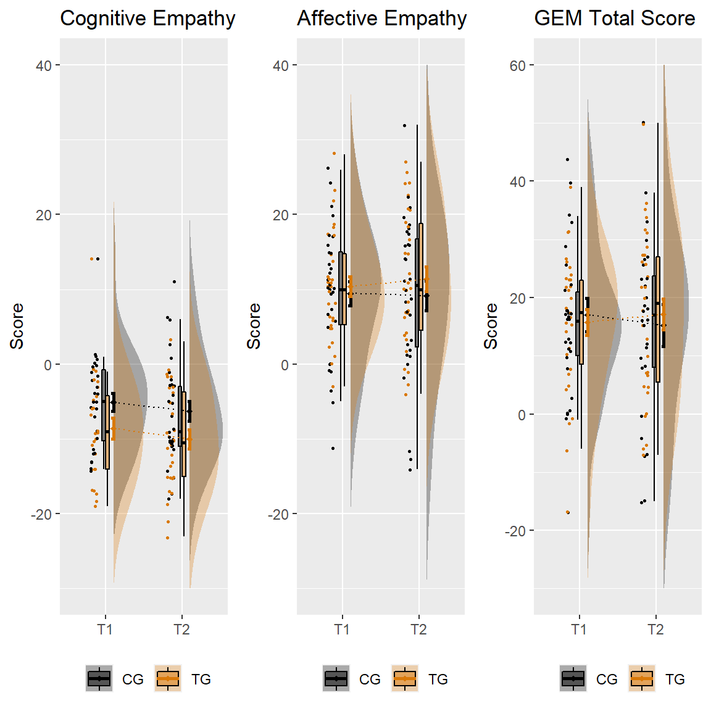
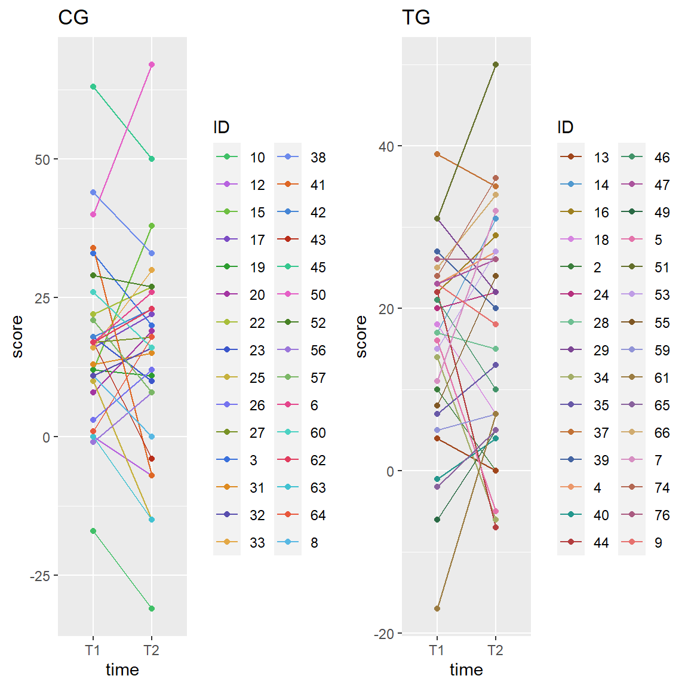
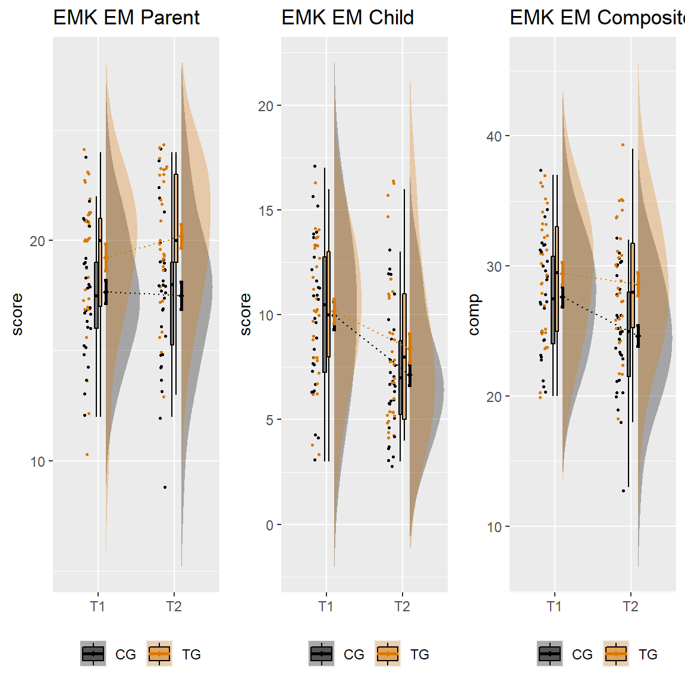
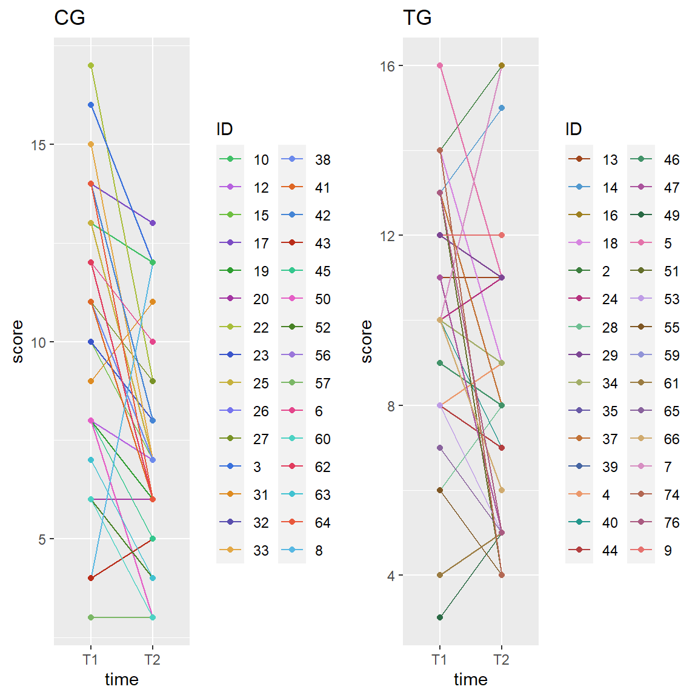
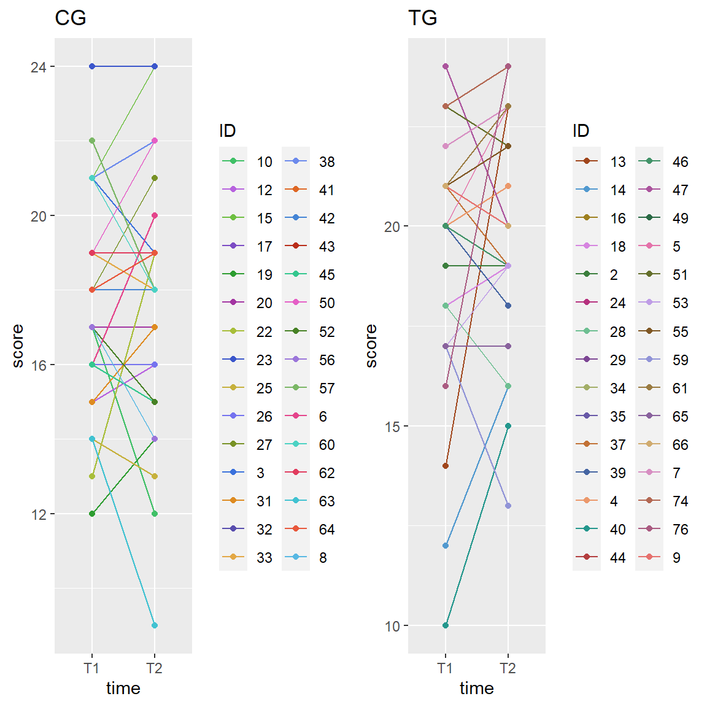

Primary outcomes
Griffith Empathy Measure (GEM)
Visualization
Group differences
### GEM CE ###
# Select variable of interest
qn_data_long_GEM_CE = subset(qn_data_long, time == "GEM_CE_T1" | time == "GEM_CE_T2")
# Factor group variable
qn_data_long_GEM_CE$group = factor(qn_data_long_GEM_CE$group)
(levels(qn_data_long_GEM_CE$group))
# Factor variable of interest
qn_data_long_GEM_CE$time = factor(qn_data_long_GEM_CE$time)
levels(qn_data_long_GEM_CE$time)
# Calculate means/SD of the data
sumrepdat = summarySE(qn_data_long_GEM_CE, measurevar = "score", groupvars = c("group",
"time"), na.rm = TRUE)
# Plot effects
rc_GEM_CE = ggplot(qn_data_long_GEM_CE, aes(x = time, y = score, fill = group)) +
geom_flat_violin(aes(fill = group), position = position_nudge(x = 0.1, y = 0),
adjust = 1.5, trim = FALSE, alpha = 0.3, colour = NA) + geom_point(aes(x = as.numeric(time) -
0.15, y = score, colour = group), position = position_jitter(width = 0.05), size = 0.9,
shape = 20) + geom_boxplot(aes(x = time, y = score, fill = group), outlier.shape = NA,
alpha = 0.5, width = 0.1, colour = "black") + geom_line(data = sumrepdat, aes(x = as.numeric(time) +
0.1, y = score_mean, group = group, colour = group), linetype = 3) + geom_point(data = sumrepdat,
aes(x = as.numeric(time) + 0.1, y = score_mean, group = group, colour = group),
shape = 18, size = 1.5) + geom_errorbar(data = sumrepdat, aes(x = as.numeric(time) +
0.1, y = score_mean, group = group, colour = group, ymin = score_mean - se, ymax = score_mean +
se), width = 0.05, size = 1) + scale_colour_manual(values = ZE_col) + scale_fill_manual(values = ZE_col) +
scale_x_discrete(labels = c("T1", "T2")) + scale_y_continuous(name = "Score",
limits = c(-30, 40)) + theme(legend.position = "bottom", legend.title = element_blank(),
axis.title.x = element_blank()) + ggtitle("Cognitive Empathy")
### GEM AE ###
# Select variable of interest
qn_data_long_GEM_AE = subset(qn_data_long, time == "GEM_AE_T1" | time == "GEM_AE_T2")
# Factor group variable
qn_data_long_GEM_AE$group = factor(qn_data_long_GEM_AE$group)
(levels(qn_data_long_GEM_AE$group))
# Factor variable of interest
qn_data_long_GEM_AE$time = factor(qn_data_long_GEM_AE$time)
levels(qn_data_long_GEM_AE$time)
# Calculate means/SD of the data
sumrepdat = summarySE(qn_data_long_GEM_AE, measurevar = "score", groupvars = c("group",
"time"), na.rm = TRUE)
# Plot effects
rc_GEM_AE = ggplot(qn_data_long_GEM_AE, aes(x = time, y = score, fill = group)) +
geom_flat_violin(aes(fill = group), position = position_nudge(x = 0.1, y = 0),
adjust = 1.5, trim = FALSE, alpha = 0.3, colour = NA) + geom_point(aes(x = as.numeric(time) -
0.15, y = score, colour = group), position = position_jitter(width = 0.05), size = 0.9,
shape = 20) + geom_boxplot(aes(x = time, y = score, fill = group), outlier.shape = NA,
alpha = 0.5, width = 0.1, colour = "black") + geom_line(data = sumrepdat, aes(x = as.numeric(time) +
0.1, y = score_mean, group = group, colour = group), linetype = 3) + geom_point(data = sumrepdat,
aes(x = as.numeric(time) + 0.1, y = score_mean, group = group, colour = group),
shape = 18, size = 1.5) + geom_errorbar(data = sumrepdat, aes(x = as.numeric(time) +
0.1, y = score_mean, group = group, colour = group, ymin = score_mean - se, ymax = score_mean +
se), width = 0.05, size = 1) + scale_colour_manual(values = ZE_col) + scale_fill_manual(values = ZE_col) +
scale_x_discrete(labels = c("T1", "T2")) + scale_y_continuous(name = "Score",
limits = c(-30, 40)) + theme(legend.position = "bottom", legend.title = element_blank(),
axis.title.x = element_blank()) + ggtitle("Affective Empathy")
### GEM Total ###
# Select variable of interest
qn_data_long_GEM_Total = subset(qn_data_long, time == "GEM_Total_T1" | time == "GEM_Total_T2")
# Factor group variable
qn_data_long_GEM_Total$group = factor(qn_data_long_GEM_Total$group)
(levels(qn_data_long_GEM_Total$group))
# Factor variable of interest
qn_data_long_GEM_Total$time = factor(qn_data_long_GEM_Total$time)
levels(qn_data_long_GEM_Total$time)
# Calculate means/SD of the data
sumrepdat = summarySE(qn_data_long_GEM_Total, measurevar = "score", groupvars = c("group",
"time"), na.rm = TRUE)
# Plot effects
rc_GEM_Total = ggplot(qn_data_long_GEM_Total, aes(x = time, y = score, fill = group)) +
geom_flat_violin(aes(fill = group), position = position_nudge(x = 0.1, y = 0),
adjust = 1.5, trim = FALSE, alpha = 0.3, colour = NA) + geom_point(aes(x = as.numeric(time) -
0.15, y = score, colour = group), position = position_jitter(width = 0.05), size = 0.9,
shape = 20) + geom_boxplot(aes(x = time, y = score, fill = group), outlier.shape = NA,
alpha = 0.5, width = 0.1, colour = "black") + geom_line(data = sumrepdat, aes(x = as.numeric(time) +
0.1, y = score_mean, group = group, colour = group), linetype = 3) + geom_point(data = sumrepdat,
aes(x = as.numeric(time) + 0.1, y = score_mean, group = group, colour = group),
shape = 18, size = 1.5) + geom_errorbar(data = sumrepdat, aes(x = as.numeric(time) +
0.1, y = score_mean, group = group, colour = group, ymin = score_mean - se, ymax = score_mean +
se), width = 0.05, size = 1) + scale_colour_manual(values = ZE_col) + scale_fill_manual(values = ZE_col) +
scale_x_discrete(labels = c("T1", "T2")) + scale_y_continuous(name = "Score",
limits = c(-30, 60)) + theme(legend.position = "bottom", legend.title = element_blank(),
axis.title.x = element_blank()) + ggtitle("GEM Total Score")
# Display plots
fig_GEM = cowplot::plot_grid(rc_GEM_CE, rc_GEM_AE, rc_GEM_Total, ncol = 3, rel_widths = c(1,
1, 1))
fig_GEM
Individual trajectories
CG_decr = sum(qn_data$d_GEM_Total[qn_data$group == "CG"] < 0)
CG_incr = sum(qn_data$d_GEM_Total[qn_data$group == "CG"] > 0)
CG_eq = sum(qn_data$d_GEM_Total[qn_data$group == "CG"] == 0)
TG_decr = sum(qn_data$d_GEM_Total[qn_data$group == "TG"] < 0)
TG_incr = sum(qn_data$d_GEM_Total[qn_data$group == "TG"] > 0)
TG_eq = sum(qn_data$d_GEM_Total[qn_data$group == "TG"] == 0)- TG: 17 participants showed an increase; 12 participants showed a decrease; 1 participants showed no change
- CG: 15 participants showed an increase; 15 participants showed a decrease; 0 participants showed no change
# https://medialab.github.io/iwanthue/
# Define IDs as character variable
qn_data_long_GEM_Total$ID = as.character(qn_data_long_GEM_Total$ID)
# Separate by groups
qn_data_long_GEM_Total_CG = subset(qn_data_long_GEM_Total, group == "CG")
# Line plot with multiple groups
CG_GEM_traj = ggplot(data = qn_data_long_GEM_Total_CG, aes(x = time, y = score, group = ID)) +
geom_line(aes(color = ID)) + geom_point(aes(color = ID)) + ggtitle("CG") + scale_x_discrete(labels = c("T1",
"T2")) + scale_color_manual(values = c("#40c067", "#b762df", "#6ebf41", "#7c4cc4",
"#2d9d30", "#a335a2", "#a8be3a", "#3b56cb", "#c6b13d", "#7573ef", "#789226",
"#3a71dc", "#de8b21", "#594eae", "#e3a846", "#6c8aec", "#de6725", "#4585d5",
"#b92d1a", "#34c78e", "#e55fc6", "#478125", "#9b76da", "#7bb766", "#e4458b",
"#4cd2c3", "#e13c5e", "#41c2d1", "#e8583c", "#58b8e3", "#a0461c", "#5199cf",
"#9e8020", "#d685e0", "#3b7e3d", "#b6317e", "#6ebf92", "#7d4694", "#a3ae68",
"#6859a7", "#c27236", "#4565a2", "#eb986b", "#24978d", "#b33e3f", "#429369",
"#ab549d", "#2a6a45", "#e473aa", "#646f2b", "#bf9de6", "#7f5724", "#9194d7",
"#9b7c42", "#89629d", "#d0ab6f", "#d78fc2", "#b36853", "#aa5b81", "#e6716e",
"#8b445c", "#e18993", "#af3e5c"))
# Separate by groups
qn_data_long_GEM_Total_TG = subset(qn_data_long_GEM_Total, group == "TG")
# Line plot with multiple groups
TG_GEM_traj = ggplot(data = qn_data_long_GEM_Total_TG, aes(x = time, y = score, group = ID)) +
geom_line(aes(color = ID)) + geom_point(aes(color = ID)) + ggtitle("TG") + scale_x_discrete(labels = c("T1",
"T2")) + scale_color_manual(values = c("#a0461c", "#5199cf", "#9e8020", "#d685e0",
"#3b7e3d", "#b6317e", "#6ebf92", "#7d4694", "#a3ae68", "#6859a7", "#c27236",
"#4565a2", "#eb986b", "#24978d", "#b33e3f", "#429369", "#ab549d", "#2a6a45",
"#e473aa", "#646f2b", "#bf9de6", "#7f5724", "#9194d7", "#9b7c42", "#89629d",
"#d0ab6f", "#d78fc2", "#b36853", "#aa5b81", "#e6716e", "#8b445c", "#e18993",
"#af3e5c"))
# Display plots
fig_GEM_traj = cowplot::plot_grid(CG_GEM_traj, TG_GEM_traj, ncol = 2, rel_widths = c(1,
1))
fig_GEM_traj
T1 Group-Differences
GEM CE
tadaa_t.test(data = qn_data, response = GEM_CE_T1, group = group, print = "markdown")Table 1: Welch Two Sample t-test with alternative hypothesis: \(\mu_1 \neq \mu_2\)
| Diff | \(\mu_1\) TG | \(\mu_2\) CG | t | SE | df | \(CI_{95\%}\) | p | Cohen's d |
|---|---|---|---|---|---|---|---|---|
| -3.47 | -8.58 | -5.11 | -1.88 | 1.85 | 49.61 | (-7.18 - 0.25) | .066 | -0.51 |
GEM AE
tadaa_t.test(data = qn_data, response = GEM_AE_T1, group = group, print = "markdown")Table 2: Welch Two Sample t-test with alternative hypothesis: \(\mu_1 \neq \mu_2\)
| Diff | \(\mu_1\) TG | \(\mu_2\) CG | t | SE | df | \(CI_{95\%}\) | p | Cohen's d |
|---|---|---|---|---|---|---|---|---|
| 0.93 | 10.37 | 9.43 | 0.45 | 2.08 | 55.96 | (-3.23 - 5.09) | .655 | 0.12 |
GEM Total
tadaa_t.test(data = qn_data, response = GEM_Total_T1, group = group, print = "markdown")Table 3: Welch Two Sample t-test with alternative hypothesis: \(\mu_1 \neq \mu_2\)
| Diff | \(\mu_1\) TG | \(\mu_2\) CG | t | SE | df | \(CI_{95\%}\) | p | Cohen's d |
|---|---|---|---|---|---|---|---|---|
| -1.27 | 15.77 | 17.03 | -0.35 | 3.59 | 54.84 | (-8.47 - 5.94) | .726 | -0.09 |
EMK Empathy
Visualization
Group differences
### EMK CH EM ###
# Select variable of interest
qn_data_long_EMK_EM_CH = subset(qn_data_long, time == "EMK_EM_CH_T1" | time == "EMK_EM_CH_T2")
# Factor group variable
qn_data_long_EMK_EM_CH$group = factor(qn_data_long_EMK_EM_CH$group)
(levels(qn_data_long_EMK_EM_CH$group))
# Factor variable of interest
qn_data_long_EMK_EM_CH$time = factor(qn_data_long_EMK_EM_CH$time)
levels(qn_data_long_EMK_EM_CH$time)
# Calculate means/SD of the data
sumrepdat = summarySE(qn_data_long_EMK_EM_CH, measurevar = "score", groupvars = c("group",
"time"), na.rm = TRUE)
# Plot effects
rc_EMK_EM_CH = ggplot(qn_data_long_EMK_EM_CH, aes(x = time, y = score, fill = group)) +
geom_flat_violin(aes(fill = group), position = position_nudge(x = 0.1, y = 0),
adjust = 1.5, trim = FALSE, alpha = 0.3, colour = NA) + geom_point(aes(x = as.numeric(time) -
0.15, y = score, colour = group), position = position_jitter(width = 0.05), size = 0.9,
shape = 20) + geom_boxplot(aes(x = time, y = score, fill = group), outlier.shape = NA,
alpha = 0.5, width = 0.1, colour = "black") + geom_line(data = sumrepdat, aes(x = as.numeric(time) +
0.1, y = score_mean, group = group, colour = group), linetype = 3) + geom_point(data = sumrepdat,
aes(x = as.numeric(time) + 0.1, y = score_mean, group = group, colour = group),
shape = 18, size = 1.5) + geom_errorbar(data = sumrepdat, aes(x = as.numeric(time) +
0.1, y = score_mean, group = group, colour = group, ymin = score_mean - se, ymax = score_mean +
se), width = 0.05, size = 1) + scale_colour_manual(values = ZE_col) + scale_fill_manual(values = ZE_col) +
scale_x_discrete(labels = c("T1", "T2")) + # scale_y_continuous(name='Score', limits=c(-5, 4)) +
theme(legend.position = "bottom", legend.title = element_blank(), axis.title.x = element_blank()) +
ggtitle("EMK EM Child")
### EMK P EM ###
# Select variable of interest
qn_data_long_EMK_EM_P = subset(qn_data_long, time == "EMK_EM_P_T1" | time == "EMK_EM_P_T2")
# Factor group variable
qn_data_long_EMK_EM_P$group = factor(qn_data_long_EMK_EM_P$group)
(levels(qn_data_long_EMK_EM_P$group))
# Factor variable of interest
qn_data_long_EMK_EM_P$time = factor(qn_data_long_EMK_EM_P$time)
levels(qn_data_long_EMK_EM_P$time)
# Calculate means/SD of the data
sumrepdat = summarySE(qn_data_long_EMK_EM_P, measurevar = "score", groupvars = c("group",
"time"), na.rm = TRUE)
# Plot effects
rc_EMK_EM_P = ggplot(qn_data_long_EMK_EM_P, aes(x = time, y = score, fill = group)) +
geom_flat_violin(aes(fill = group), position = position_nudge(x = 0.1, y = 0),
adjust = 1.5, trim = FALSE, alpha = 0.3, colour = NA) + geom_point(aes(x = as.numeric(time) -
0.15, y = score, colour = group), position = position_jitter(width = 0.05), size = 0.9,
shape = 20) + geom_boxplot(aes(x = time, y = score, fill = group), outlier.shape = NA,
alpha = 0.5, width = 0.1, colour = "black") + geom_line(data = sumrepdat, aes(x = as.numeric(time) +
0.1, y = score_mean, group = group, colour = group), linetype = 3) + geom_point(data = sumrepdat,
aes(x = as.numeric(time) + 0.1, y = score_mean, group = group, colour = group),
shape = 18, size = 1.5) + geom_errorbar(data = sumrepdat, aes(x = as.numeric(time) +
0.1, y = score_mean, group = group, colour = group, ymin = score_mean - se, ymax = score_mean +
se), width = 0.05, size = 1) + scale_colour_manual(values = ZE_col) + scale_fill_manual(values = ZE_col) +
scale_x_discrete(labels = c("T1", "T2")) + # scale_y_continuous(name='Score', limits=c(-5, 4)) +
theme(legend.position = "bottom", legend.title = element_blank(), axis.title.x = element_blank()) +
ggtitle("EMK EM Parent")
### EMK EW composite score ###
qn_data_long_EMK_EM_comp = qn_data_long_EMK_EM_P
qn_data_long_EMK_EM_comp$comp = qn_data_long_EMK_EM_comp$score + qn_data_long_EMK_EM_CH$score
# Factor group variable
qn_data_long_EMK_EM_comp$group = factor(qn_data_long_EMK_EM_comp$group)
(levels(qn_data_long_EMK_EM_comp$group))
# Factor variable of interest
qn_data_long_EMK_EM_comp$time = factor(qn_data_long_EMK_EM_comp$time)
levels(qn_data_long_EMK_EM_comp$time)
# Calculate means/SD of the data
sumrepdat = summarySE(qn_data_long_EMK_EM_comp, measurevar = "comp", groupvars = c("group",
"time"), na.rm = TRUE)
# Plot effects
rc_EMK_EM_comp = ggplot(qn_data_long_EMK_EM_comp, aes(x = time, y = comp, fill = group)) +
geom_flat_violin(aes(fill = group), position = position_nudge(x = 0.1, y = 0),
adjust = 1.5, trim = FALSE, alpha = 0.3, colour = NA) + geom_point(aes(x = as.numeric(time) -
0.15, y = comp, colour = group), position = position_jitter(width = 0.05), size = 0.9,
shape = 20) + geom_boxplot(aes(x = time, y = comp, fill = group), outlier.shape = NA,
alpha = 0.5, width = 0.1, colour = "black") + geom_line(data = sumrepdat, aes(x = as.numeric(time) +
0.1, y = comp_mean, group = group, colour = group), linetype = 3) + geom_point(data = sumrepdat,
aes(x = as.numeric(time) + 0.1, y = comp_mean, group = group, colour = group),
shape = 18, size = 1.5) + geom_errorbar(data = sumrepdat, aes(x = as.numeric(time) +
0.1, y = comp_mean, group = group, colour = group, ymin = comp_mean - se, ymax = comp_mean +
se), width = 0.05, size = 1) + scale_colour_manual(values = ZE_col) + scale_fill_manual(values = ZE_col) +
scale_x_discrete(labels = c("T1", "T2")) + # scale_y_continuous(name='comp', limits=c(-5, 4)) +
theme(legend.position = "bottom", legend.title = element_blank(), axis.title.x = element_blank()) +
ggtitle("EMK EM Composite")
# Display plots
fig_EMK_EM = cowplot::plot_grid(rc_EMK_EM_P, rc_EMK_EM_CH, rc_EMK_EM_comp, ncol = 3,
rel_widths = c(1, 1, 1))
fig_EMK_EM
Individual trajectories
EMK EM CH
CG_decr = sum(qn_data$d_EMK_EM_CH[qn_data$group == "CG"] < 0)
CG_incr = sum(qn_data$d_EMK_EM_CH[qn_data$group == "CG"] > 0)
CG_eq = sum(qn_data$d_EMK_EM_CH[qn_data$group == "CG"] == 0)
TG_decr = sum(qn_data$d_EMK_EM_CH[qn_data$group == "TG"] < 0)
TG_incr = sum(qn_data$d_EMK_EM_CH[qn_data$group == "TG"] > 0)
TG_eq = sum(qn_data$d_EMK_EM_CH[qn_data$group == "TG"] == 0)- TG: 9 participants showed an increase; 19 participants showed a decrease; 2 participants showed no change
- CG: 3 participants showed an increase; 25 participants showed a decrease; 2 participants showed no change
# https://medialab.github.io/iwanthue/
# Define IDs as character variable
qn_data_long_EMK_EM_CH$ID = as.character(qn_data_long_EMK_EM_CH$ID)
# Separate by groups
qn_data_long_EMK_EM_CH_CG = subset(qn_data_long_EMK_EM_CH, group == "CG")
# Line plot with multiple groups
CG_EMK_EM_CH_traj = ggplot(data = qn_data_long_EMK_EM_CH_CG, aes(x = time, y = score,
group = ID)) + geom_line(aes(color = ID)) + geom_point(aes(color = ID)) + ggtitle("CG") +
scale_x_discrete(labels = c("T1", "T2")) + scale_color_manual(values = c("#40c067",
"#b762df", "#6ebf41", "#7c4cc4", "#2d9d30", "#a335a2", "#a8be3a", "#3b56cb",
"#c6b13d", "#7573ef", "#789226", "#3a71dc", "#de8b21", "#594eae", "#e3a846",
"#6c8aec", "#de6725", "#4585d5", "#b92d1a", "#34c78e", "#e55fc6", "#478125",
"#9b76da", "#7bb766", "#e4458b", "#4cd2c3", "#e13c5e", "#41c2d1", "#e8583c",
"#58b8e3", "#a0461c", "#5199cf", "#9e8020", "#d685e0", "#3b7e3d", "#b6317e",
"#6ebf92", "#7d4694", "#a3ae68", "#6859a7", "#c27236", "#4565a2", "#eb986b",
"#24978d", "#b33e3f", "#429369", "#ab549d", "#2a6a45", "#e473aa", "#646f2b",
"#bf9de6", "#7f5724", "#9194d7", "#9b7c42", "#89629d", "#d0ab6f", "#d78fc2",
"#b36853", "#aa5b81", "#e6716e", "#8b445c", "#e18993", "#af3e5c"))
# Separate by groups
qn_data_long_EMK_EM_CH_TG = subset(qn_data_long_EMK_EM_CH, group == "TG")
# Line plot with multiple groups
TG_EMK_EM_CH_traj = ggplot(data = qn_data_long_EMK_EM_CH_TG, aes(x = time, y = score,
group = ID)) + geom_line(aes(color = ID)) + geom_point(aes(color = ID)) + ggtitle("TG") +
scale_x_discrete(labels = c("T1", "T2")) + scale_color_manual(values = c("#a0461c",
"#5199cf", "#9e8020", "#d685e0", "#3b7e3d", "#b6317e", "#6ebf92", "#7d4694",
"#a3ae68", "#6859a7", "#c27236", "#4565a2", "#eb986b", "#24978d", "#b33e3f",
"#429369", "#ab549d", "#2a6a45", "#e473aa", "#646f2b", "#bf9de6", "#7f5724",
"#9194d7", "#9b7c42", "#89629d", "#d0ab6f", "#d78fc2", "#b36853", "#aa5b81",
"#e6716e", "#8b445c", "#e18993", "#af3e5c"))
# Display plots
fig_EMK_EM_CH_traj = cowplot::plot_grid(CG_EMK_EM_CH_traj, TG_EMK_EM_CH_traj, ncol = 2,
rel_widths = c(1, 1))
fig_EMK_EM_CH_traj
EMK EM P
CG_decr = sum(qn_data$d_EMK_EM_P[qn_data$group == "CG"] < 0)
CG_incr = sum(qn_data$d_EMK_EM_P[qn_data$group == "CG"] > 0)
CG_eq = sum(qn_data$d_EMK_EM_P[qn_data$group == "CG"] == 0)
TG_decr = sum(qn_data$d_EMK_EM_P[qn_data$group == "TG"] < 0)
TG_incr = sum(qn_data$d_EMK_EM_P[qn_data$group == "TG"] > 0)
TG_eq = sum(qn_data$d_EMK_EM_P[qn_data$group == "TG"] == 0)TG: 17 participants showed an increase; 10 participants showed a decrease; 3 participants showed no change
CG: 11 participants showed an increase; 12 participants showed a decrease; 7 participants showed no change
TG interesting trajectories:
- Sharpest decreases: 47, 59
CG interesting trajectories:
- Sharpest increase: 22
# https://medialab.github.io/iwanthue/
# Define IDs as character variable
qn_data_long_EMK_EM_P$ID = as.character(qn_data_long_EMK_EM_P$ID)
# Separate by groups
qn_data_long_EMK_EM_P_CG = subset(qn_data_long_EMK_EM_P, group == "CG")
# Line plot with multiple groups
CG_EMK_EM_P_traj = ggplot(data = qn_data_long_EMK_EM_P_CG, aes(x = time, y = score,
group = ID)) + geom_line(aes(color = ID)) + geom_point(aes(color = ID)) + ggtitle("CG") +
scale_x_discrete(labels = c("T1", "T2")) + scale_color_manual(values = c("#40c067",
"#b762df", "#6ebf41", "#7c4cc4", "#2d9d30", "#a335a2", "#a8be3a", "#3b56cb",
"#c6b13d", "#7573ef", "#789226", "#3a71dc", "#de8b21", "#594eae", "#e3a846",
"#6c8aec", "#de6725", "#4585d5", "#b92d1a", "#34c78e", "#e55fc6", "#478125",
"#9b76da", "#7bb766", "#e4458b", "#4cd2c3", "#e13c5e", "#41c2d1", "#e8583c",
"#58b8e3", "#a0461c", "#5199cf", "#9e8020", "#d685e0", "#3b7e3d", "#b6317e",
"#6ebf92", "#7d4694", "#a3ae68", "#6859a7", "#c27236", "#4565a2", "#eb986b",
"#24978d", "#b33e3f", "#429369", "#ab549d", "#2a6a45", "#e473aa", "#646f2b",
"#bf9de6", "#7f5724", "#9194d7", "#9b7c42", "#89629d", "#d0ab6f", "#d78fc2",
"#b36853", "#aa5b81", "#e6716e", "#8b445c", "#e18993", "#af3e5c"))
# Separate by groups
qn_data_long_EMK_EM_P_TG = subset(qn_data_long_EMK_EM_P, group == "TG")
# Line plot with multiple groups
TG_EMK_EM_P_traj = ggplot(data = qn_data_long_EMK_EM_P_TG, aes(x = time, y = score,
group = ID)) + geom_line(aes(color = ID)) + geom_point(aes(color = ID)) + ggtitle("TG") +
scale_x_discrete(labels = c("T1", "T2")) + scale_color_manual(values = c("#a0461c",
"#5199cf", "#9e8020", "#d685e0", "#3b7e3d", "#b6317e", "#6ebf92", "#7d4694",
"#a3ae68", "#6859a7", "#c27236", "#4565a2", "#eb986b", "#24978d", "#b33e3f",
"#429369", "#ab549d", "#2a6a45", "#e473aa", "#646f2b", "#bf9de6", "#7f5724",
"#9194d7", "#9b7c42", "#89629d", "#d0ab6f", "#d78fc2", "#b36853", "#aa5b81",
"#e6716e", "#8b445c", "#e18993", "#af3e5c"))
# Display plots
fig_EMK_EM_P_traj = cowplot::plot_grid(CG_EMK_EM_P_traj, TG_EMK_EM_P_traj, ncol = 2,
rel_widths = c(1, 1))
fig_EMK_EM_P_traj
T1 Group-Differences
EMK empathy child assessment
tadaa_t.test(data = qn_data, response = EMK_EM_CH_T1, group = group, print = "markdown")Table 4: Welch Two Sample t-test with alternative hypothesis: \(\mu_1 \neq \mu_2\)
| Diff | \(\mu_1\) TG | \(\mu_2\) CG | t | SE | df | \(CI_{95\%}\) | p | Cohen's d |
|---|---|---|---|---|---|---|---|---|
| 0.2 | 10.17 | 9.97 | 0.23 | 0.89 | 56.83 | (-1.58 - 1.98) | .823 | 0.06 |
EMK empathy parental questionnaire
tadaa_t.test(data = qn_data, response = EMK_EM_P_T1, group = group, print = "markdown")Table 5: Welch Two Sample t-test with alternative hypothesis: \(\mu_1 \neq \mu_2\)
| Diff | \(\mu_1\) TG | \(\mu_2\) CG | t | SE | df | \(CI_{95\%}\) | p | Cohen's d |
|---|---|---|---|---|---|---|---|---|
| 1.57 | 19.23 | 17.67 | 1.97 | 0.8 | 56.78 | (-0.03 - 3.16) | .054 | 0.51 |